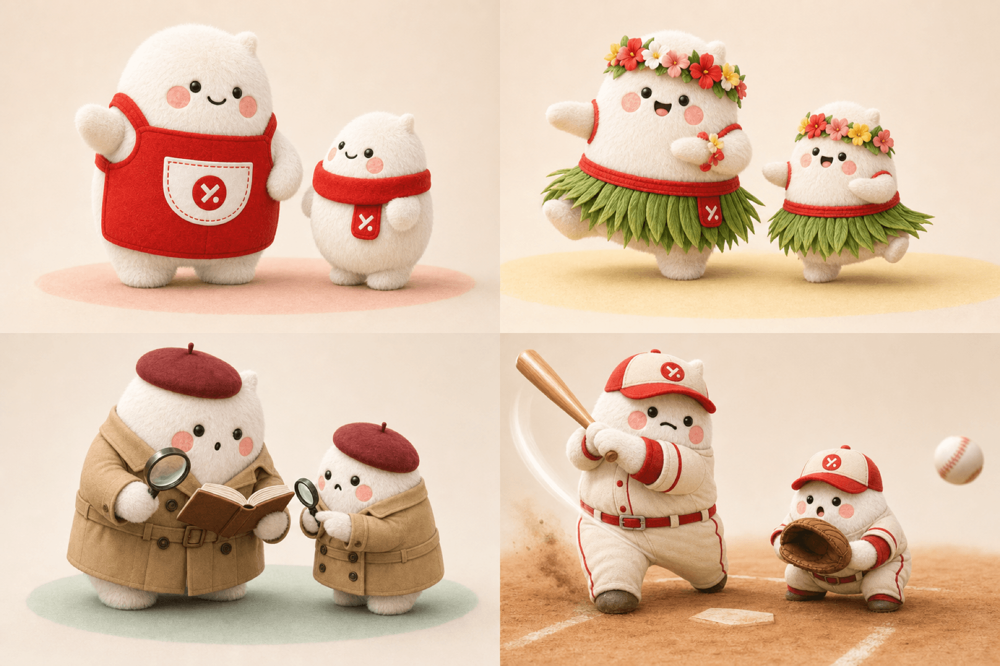
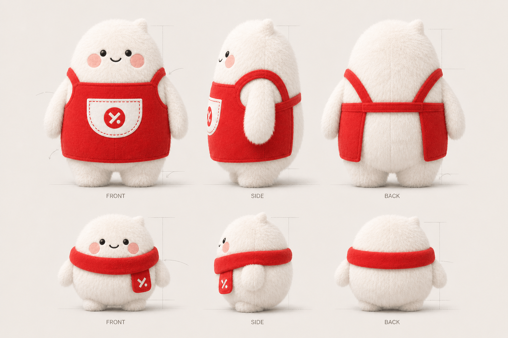
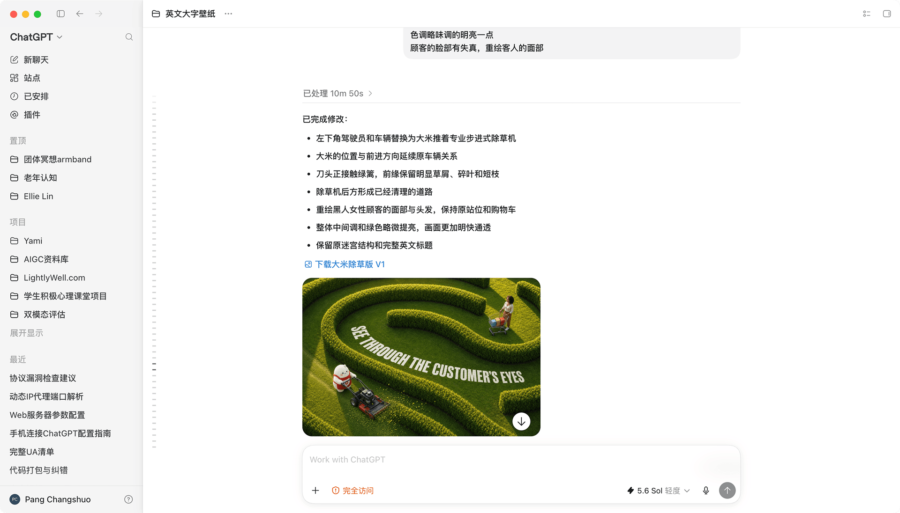

Created & directed byErin LinConcept · Art Direction · Iteration
Use arrows or keyboard
A visual culture archive
Six Yami values translated into cinematic worlds with Dami and Xiaomi—built through human direction, character consistency, and iterative collaboration with AI.
六条亚米文化，被转译为大米与小米共同经历的六个电影化世界。作品以人的创意与判断为主导，在持续迭代中与 AI 协作完成。
Why Dami & Xiaomi
为什么由大米与小米演绎企业文化
One character system carries six values across image, motion, emotion, and sound—turning culture into a distinctive Yami experience.

Soft, rounded, and universally appealing—they fit naturally into scenes like competition, travel, and exploration, with expressions that bring corporate culture to life.
Each video closes with Yami's signature soft sound cue, reinforcing auditory recall.
Visuals to see, sound to hear—fully unlocking the IP's versatility so this character identity delivers lasting value, shaping internal culture and telling our brand's story to the world.
壁纸以「大米」「小米」为主角：
软萌圆润的形象既契合核心用户审美，又不受年龄、族裔限制，可自然融入竞技、远行、探索等场景，搭配多样情绪演绎，让抽象企业文化具象可感。
每个视频以软萌的 Yami 专属音效结尾，强化听觉记忆。
看得见的画面、听得见的声音，全方位挖掘 IP 的可塑性，也让该形象在对内文化落地、对外品牌宣传中，释放长效价值。
From idea to image
设计流程
A repeatable workflow that keeps the cultural idea, mascot identity, and final visual language aligned.
Discuss visual metaphors with GPT and Doubao, then select a scene that expresses the value without becoming literal.
与 GPT、豆包讨论符合亚米文化的场景，在多个隐喻中筛选最清晰、有故事感的方向。
Define Dami and Xiaomi across front, side, and back views, preserving silhouette, proportions, fur, and costume language.
建立大米、小米的正面、侧面与背面形象，统一轮廓、比例、绒毛和服装特征。
GPT turns the chosen scene into production prompts covering composition, action, lighting, typography, and constraints.
由 GPT 将创意转化为包含构图、动作、光线、字体与限制条件的制作提示词。
Generate, compare, and refine the wallpaper through focused visual corrections rather than broad restarts.
生成并比较画面，通过聚焦式修正不断完善壁纸，而不是反复推倒重来。
GPT consolidates the prompts, artwork story, and final production evidence into this living archive.
由 GPT 汇总提示词、作品故事与最终生成记录，形成完整的过程档案。

Front, side, and back views anchor character consistency across six very different worlds.
长绒版三视图为六个不同场景提供稳定、准确的角色基准。
The collection
六个文化故事
Choose a value to reveal its artwork, story, prompt evolution, and final generation record.
Play the short film first—the value is revealed through action, then sealed with Yami's signature sound.
